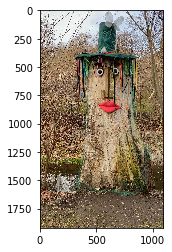
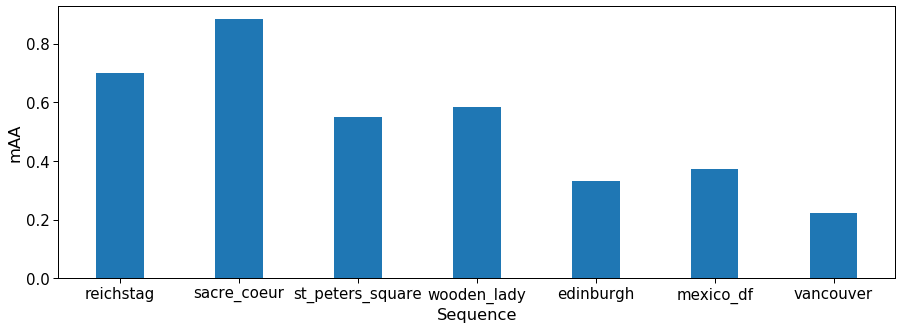
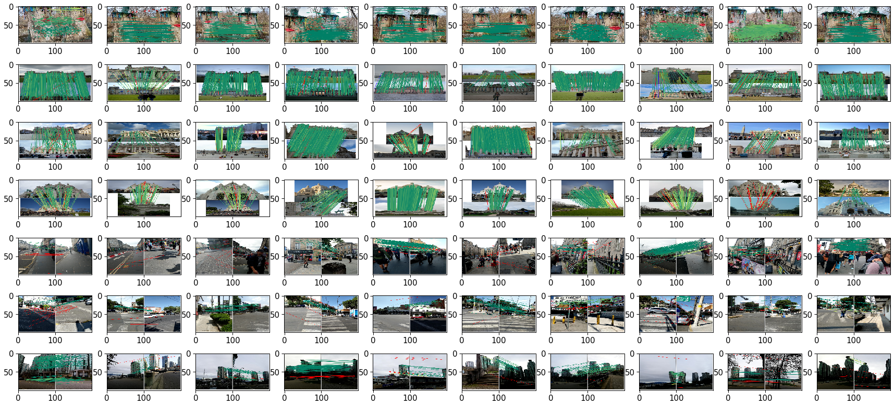
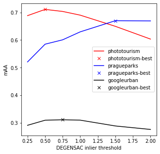

import matplotlib.pyplot as plt
import numpy as np
import cv2
import torch
import kornia as K
import kornia.feature as KF
from kornia_moons.feature import *
device = torch.device('cpu')
try:
if torch.cuda.is_available():
device = torch.device('cuda')
print ("GPU mode")
except:
print ('CPU mode')
#device = torch.device('cpu')
# SIFT (DoG) Detector
sift_det = cv2.SIFT_create(8000, contrastThreshold=-10000, edgeThreshold=-10000)
# HardNet8 descriptor
hardnet8 = KF.HardNet8(True).eval().to(device)
# Affine shape estimator
affnet = KF.LAFAffNetShapeEstimator(True).eval().to(device)What is Image Matching Challenge?
IMC is a benchmark and challenge for the local features (such as SIFT, SuperPoint, etc), matching methods (CNe, SuperGlue, etc.) and robust geometry estimators such as RANSAC, at CVPR 2021 Workshop on Image Matching.
I will walk you through the submission process, including writing setting-up an environment, writing a processing script and tuning matching and RANSAC for the best performance. As this is a tutorial, not a research paper, we use local feature descriptor available in kornia for this sample submission.
All the codes and scripts in this tutorial are also avilable at https://github.com/ducha-aiki/imc2021-sample-kornia-submission. Let’s go!
Setting up the environment
First, let’s clone the benchmark repository.
git clone https://github.com/ubc-vision/image-matching-benchmark
cd image-matching-benchmark
git submodule update --init --recursiveNow we need to create conda virtual environment. I assume that you have conda installed, and if not - please, follow instructions here
conda env create -f system/conda_env_dm.ymlAfter successfull environment creation, let’s activate it
conda activate sfmDownloading the data
IMC-2021 data consists of 3 datasets: Phototourism, PragueParks and GoogleUrban. You can download first two freely, but need to request a credentials and accept license agreement for the GoogleUrban dataset.
Latter is done by writing an email to image-matching@googlegroups.com and asking for the password. All datasets consist of two parts each: test part, which contains only images and validation part, which comes together with ground truth. Validation ground truth can (and should!) be used for hyperparameter tuning for your submission.
cd ..
mkdir imc-2021-data
cd imc-2021-data
wget https://www.cs.ubc.ca/research/kmyi_data/imc2021-public/imc-2021-test-public-pragueparks.tar.gz
wget https://www.cs.ubc.ca/research/kmyi_data/imc2021-public/imc-2021-validation-pragueparks.tar.gz
wget https://www.cs.ubc.ca/research/kmyi_data/imc2021-public/imc-2021-test-public-phototourism.tar.gz
wget https://www.cs.ubc.ca/research/kmyi_data/imc2021-public/imc-2021-validation-phototourism.tar.gzI am assuming that you have requsted an access to the GoogleUrban dataset, downloaded it and put in the same directory, as the rest of the data:
(sfm) mishkdmy@n33:~/dev/imc-2021-data$ ls
imc-2021-test-public-googleurban.tar.gz imc-2021-validation-googleurban.tar.gz
imc-2021-test-public-phototourism.tar.gz imc-2021-validation-phototourism.tar.gz
imc-2021-test-public-pragueparks.tar.gz imc-2021-validation-pragueparks.tar.gzNow let’s unpack it.
for f in *.tar.gz ; do tar -xzf $f; doneNow the directory should look like this:
(sfm) mishkdmy@n33:~/dev/imc-2021-data$ ls
googleurban imc-2021-validation-phototourism.tar.gz
imc-2021-test-public-googleurban.tar.gz imc-2021-validation-pragueparks.tar.gz
imc-2021-test-public-phototourism.tar.gz phototourism
imc-2021-test-public-pragueparks.tar.gz pragueparks
imc-2021-validation-googleurban.tar.gzExtracting the features
Let’s start with creating the directory for our scripts (or you can clone it from here )
cd ..
mkdir imc2021-sample-kornia-submission
cd imc2021-sample-kornia-submissionNow we will create a script, which extracts AffNet-HardNet8 descriptors on top of OpenCV SIFT keypoints.
We need to install pytorch and kornia for this:
pip install torch torchvision kornia
pip install kornia_moons --no-depsGreat! Now we are ready to extract the features from the images. Required imports and initializations:
Now we can define extract_features function. Feel free to modify it for your own features.
def extract_features(img_fname, detector, affine, descriptor, device, visualize=False):
img = cv2.cvtColor(cv2.imread(img_fname), cv2.COLOR_BGR2RGB)
if visualize:
plt.imshow(img)
kpts = detector.detect(img, None)[:8000]
# We will not train anything, so let's save time and memory by no_grad()
with torch.no_grad():
timg = K.image_to_tensor(img, False).float()/255.
timg = timg.to(device)
timg_gray = K.rgb_to_grayscale(timg)
# kornia expects keypoints in the local affine frame format.
# Luckily, kornia_moons has a conversion function
lafs = laf_from_opencv_SIFT_kpts(kpts, device=device)
lafs_new = affine(lafs, timg_gray)
if visualize:
visualize_LAF(timg, lafs_new, 0)
patches = KF.extract_patches_from_pyramid(timg_gray, lafs_new, 32)
B, N, CH, H, W = patches.size()
# Descriptor accepts standard tensor [B, CH, H, W], while patches are [B, N, CH, H, W] shape
# So we need to reshape a bit :)
descs = descriptor(patches.view(B * N, CH, H, W)).view(B * N, -1).detach().cpu().numpy()
return kpts, descsLet’s check how it works on a single image.
img_fname = '../imc-2021-data/pragueparks/wooden_lady/set_100/images/IMG_9603.MOV_frame000001.jpg'
kpts, descs = extract_features(img_fname, sift_det, affnet, hardnet8, device, True)

So far, so good. Now we need to convert our keypoints from OpenCV format to the benchmark format, which is numpy.array [N x dim]
def convert_kpts_to_imc(cv2_kpts):
keypoints = np.array([(x.pt[0], x.pt[1]) for x in cv2_kpts ]).reshape(-1, 2)
scales = np.array([12.0* x.size for x in cv2_kpts ]).reshape(-1, 1)
angles = np.array([x.angle for x in cv2_kpts ]).reshape(-1, 1)
responses = np.array([x.response for x in cv2_kpts]).reshape(-1, 1)
return keypoints, scales, angles, responsesNow we are ready to write a script, which extracts local features for all images in the IMC-2021. The full script is accesible here
import os
import h5py
from tqdm import tqdm
INPUT_DIR = '../imc-2021-data'
OUT_DIR = 'extracted/cv2-dog-affnet-hardnet8'
os.makedirs(OUT_DIR, exist_ok=True)
datasets = os.listdir(INPUT_DIR)
for ds in datasets:
ds_in_path = os.path.join(INPUT_DIR, ds)
ds_out_path = os.path.join(OUT_DIR, ds)
os.makedirs(ds_out_path, exist_ok=True)
seqs = os.listdir(ds_in_path)
for seq in seqs:
if os.path.isdir(os.path.join(ds_in_path, seq, 'set_100')):
seq_in_path = os.path.join(ds_in_path, seq, 'set_100', 'images')
else:
seq_in_path = os.path.join(ds_in_path, seq)
seq_out_path = os.path.join(ds_out_path, seq)
os.makedirs(seq_out_path, exist_ok=True)
img_fnames = os.listdir(seq_in_path)
num_kp = []
with h5py.File(f'{seq_out_path}/keypoints.h5', 'w') as f_kp, \
h5py.File(f'{seq_out_path}/descriptors.h5', 'w') as f_desc, \
h5py.File(f'{seq_out_path}/scores.h5', 'w') as f_score, \
h5py.File(f'{seq_out_path}/angles.h5' 'w') as f_ang, \
h5py.File(f'{seq_out_path}/scales.h5', 'w') as f_scale:
for img_fname in tqdm(img_fnames):
img_fname_full = os.path.join(seq_in_path, img_fname)
key = os.path.splitext(os.path.basename(img_fname))[0]
kpts, descs = extract_features(img_fname_full, sift_det, affnet, hardnet8, device, False)
keypoints, scales, angles, responses = convert_kpts_to_imc(kpts)
f_kp[key] = keypoints
f_desc[key] = descs.reshape(-1, 128)
f_score[key] = responses
f_ang[key] = angles
f_scale[key] = scales
num_kp.append(len(keypoints))
print(f'Finished processing "{ds}/{seq}" -> {np.array(num_kp).mean()} features/image')Creating config json file
In addition to features, we should submit a config file, which tells the benchmark, how the features should be matched and which RANSAC we prefer. In priciple, we can just write an arbitrary config file and submit already, but this may lead to the bad results. Let’s instead generate a config file from python, so we can easily re-generate it. Why would we need this? Quite simple - to try different parameters on the validation set and only then create a final config.
First part of the config is metadata – information about the method and authors. If your method is under review, you may want to set flag publish_anonymously to True.
metadata_dict = {
"publish_anonymously": False,
"authors": "Dmytro Mishkin, Milan Pultar and kornia team",
"contact_email": "ducha.aiki@gmail.com",
"method_name": "CV-DoG-AffNet-HardNet8 (kornia)",
"method_description":
r"""OpeCV SIFT keypoints 8000 features, followed by the AffNet normalization
and HardNet8 descriptor as implemented in kornia.
Matched using the built-in matcher (bidirectional filter with the 'both' strategy,
hopefully optimal inlier and ratio test thresholds) with DEGENSAC""",
"link_to_website": "https://github.com/kornia/kornia",
"link_to_pdf": "https://arxiv.org/abs/2007.09699"
}Second part is config_common: it tells the benchmark, which keypoints and descriptors you use. We will also need this names when importing our features during tuning on the validation set.
config_common_dict = {"json_label": "dog-affnet-hardnet8-degensac",
"keypoint": "cv2dog",
"descriptor": "affnethardnet8",
"num_keypoints": 8000}Now comes the information how to match your local features. It may vary from dataset to dataset and also be different for the multiview and stereo mode. That is why we will create a template dictionary and change some parameters later.
Specifically, we have to specify, which distance our descriptor prefers: L2, L1 and Hamming are supported.
Then comes the tentative matches filtering. One can pass none for no filtering, snn_ratio_pairwise for Lowe’s SNN ratio and fginn_ratio_pairwise for FGINN. If you are not familiar with filtering strategies, checkout this blogpost: “How to match: to learn or not to learn?”. The threshold is what have to be tunes.
We will use SNN, because of simplicity. Finally, we would like to make sure that tentative matches are cross-consistent, that is why we will enable symmetric matching.
Warning! We will use FLANN approximate nearest neighbor matching for speed-up tuning procedure, but it is better to turn it off for the final submission.
from copy import deepcopy
matcher_template_dict = {
"method": "nn",
"distance": "L2",
"flann": True,
"num_nn": 1,
"filtering": {
"type": "snn_ratio_pairwise",
"threshold": 0.90
},
"symmetric": {
"enabled": True,
"reduce": "both",
}
}Finally, we have to specify robust geometry estimation method. We will pick the default choise from the previous challenge - DEGENSAC. threshold is what have to be tuned, the rest of parameters are already optimal, or fixed by the competition rules – max_iter.
geom_template_dict = {"method": "cmp-degensac-f",
"threshold": 0.5,
"confidence": 0.999999,
"max_iter": 100000,
"error_type": "sampson",
"degeneracy_check": True,
}Let’s assemble and save our base config.
import json
base_config = {
"metadata": metadata_dict,
"config_common": config_common_dict,
"config_phototourism_stereo": {
"use_custom_matches": False,
"matcher": deepcopy(matcher_template_dict),
"outlier_filter": { "method": "none" },
"geom": deepcopy(geom_template_dict)
},
"config_phototourism_multiview": {
"use_custom_matches": False,
"matcher": deepcopy(matcher_template_dict),
"outlier_filter": { "method": "none" },
"colmap": {}},
"config_pragueparks_stereo": {
"use_custom_matches": False,
"matcher": deepcopy(matcher_template_dict),
"outlier_filter": { "method": "none" },
"geom": deepcopy(geom_template_dict)
},
"config_pragueparks_multiview": {
"use_custom_matches": False,
"matcher": deepcopy(matcher_template_dict),
"outlier_filter": { "method": "none" },
"colmap": {}},
"config_googleurban_stereo": {
"use_custom_matches": False,
"matcher": deepcopy(matcher_template_dict),
"outlier_filter": { "method": "none" },
"geom": deepcopy(geom_template_dict)
},
"config_googleurban_multiview": {
"use_custom_matches": False,
"matcher": deepcopy(matcher_template_dict),
"outlier_filter": { "method": "none" },
"colmap": {}}
}Finally, benchmark expects multiple configs, so we have to create a list, and then we can save our config
import json
with open('base_config.json', 'w') as f:
json.dump([base_config], f, indent=2)Preliminary evaluation
Now let’s check how our features perform on validation set. We have to import our feature to the benchmark and run the benchmark.
I will cheat a little bit here and skip the multiview evaluation. The reason is that it requires colmap, which might be not easy to install.
Importing features
Here we have to provide the same keypoint and descriptor names, as we wrote in json config. The rest of arguments are straightforward: path to features, json, etc.
cd ../image-matching-benchmark/
python -utt import_features.py --kp_name cv2dog --desc_name affnethardnet8 --num_keypoints 8000 --path_features ../imc2021-sample-kornia-submission/extracted/cv2-dog-affnet-hardnet8 --path_results ../benchmark-results --subset both --is_challenge false --path_json ../imc2021-sample-kornia-submission/base_config.json --datasets phototourism googleurban pragueparksRunning the evaluation
Now we are ready to run the evaluation
python -utt run.py --run_mode=interactive --json_method=../imc2021-sample-kornia-submission/base_config.json --subset=val --eval_multiview=False --path_data ../imc-2021-data/ --path_results ../benchmark-results --is_challenge falseAfter a while (an 30 min for 32 cores machine), the process will finish and you will see the following log message:
-- Saving to: "packed-val/dog-affnet-hardnet8-degensac.json"Reading results
Json file with evaluation results is saved to image-matching-benchmark/packed-val/dog-affnet-hardnet8-degensac.json, and some visualizations – to ../benchmark-visualization/png.
First, we come back to our imc2021-sample-kornia-submission directory:
cd ../imc2021-sample-kornia-submissionMetric, which are used for the competition is mean average accuracy (mAA) at visibility threshold 0.1
import os
hashname='dog-affnet-hardnet8-degensac'
res_fname = os.path.join('../image-matching-benchmark/packed-val', f'{hashname}.json')
with open(res_fname, 'r') as f:
results = json.load(f)
submission_name = results['config']['metadata']['method_name']
datasets = ['phototourism', 'pragueparks', 'googleurban']
tasks = ['stereo'] # ['stereo', 'multiview'] #Remember, that we skip colmap evaluations
metric = 'qt_auc_10_th_0.1'
for dset in datasets:
for task in tasks:
mAA = results[dset]['results']['allseq'][task]['run_avg'][metric]['mean']
print (f'{submission_name} {task} mAA for {dset} is {mAA:.4f}')CV-DoG-AffNet-HardNet8 (kornia) stereo mAA for phototourism is 0.7108
CV-DoG-AffNet-HardNet8 (kornia) stereo mAA for pragueparks is 0.5850
CV-DoG-AffNet-HardNet8 (kornia) stereo mAA for googleurban is 0.3099We can also see results sequence-by-sequence
import seaborn as sns
sns.set_context('paper', font_scale=1.7)
seqs = []
mAAs = []
for dset in datasets:
for task in tasks:
for seq in results[dset]['results'].keys():
if seq == 'allseq':
continue
mAA = results[dset]['results'][seq][task]['run_avg'][metric]['mean']
mAAs.append(mAA)
seqs.append(seq)
fig, ax = plt.subplots(figsize=(15,5))
xticks = 2*np.arange(len(seqs))
ax.set_xticks(xticks)
ax.bar(xticks, mAAs)
ax.set_xticklabels(seqs)
ax.set_ylabel('mAA')
ax.set_xlabel('Sequence')Text(0.5, 0, 'Sequence')
How do our feature correspondences look like?
import cv2
def plot_image_grid(images, ncols=None, cmap='gray'):
#Taken from https://stackoverflow.com/a/66961099/1983544
'''Plot a grid of images'''
if not ncols:
factors = [i for i in range(1, len(images)+1) if len(images) % i == 0]
ncols = factors[len(factors) // 2] if len(factors) else len(images) // 4 + 1
nrows = int(len(images) / ncols) + int(len(images) % ncols)
imgs = [images[i] if len(images) > i else None for i in range(nrows * ncols)]
f, axes = plt.subplots(nrows, ncols, figsize=(3*ncols, 2*nrows))
axes = axes.flatten()[:len(imgs)]
for img, ax in zip(imgs, axes.flatten()):
if np.any(img):
if len(img.shape) > 2 and img.shape[2] == 1:
img = img.squeeze()
ax.imshow(img, cmap=cmap)
imgs = []
VIS_DIR = f'../benchmark-visualization/png/{hashname}'
for dset in os.listdir(VIS_DIR):
dset_dir = os.path.join(VIS_DIR, dset)
for seq in os.listdir(dset_dir):
seq_dir = os.path.join(dset_dir, seq, 'stereo')
for img_fname in os.listdir(seq_dir):
full_fname = os.path.join(seq_dir, img_fname)
img = cv2.resize(cv2.cvtColor(cv2.imread(full_fname), cv2.COLOR_BGR2RGB), (200,100))
imgs.append(img)
plot_image_grid(imgs)
Hyperparameters tuning
Let’s now tune our hyperparameters, specifically, matching threshold and RANSAC inlier ratio. First we tune RANSAC and then matching ratio. We need to generate jsons for each configuration.
inl_ths = [0.25, 0.5, 0.75, 1.0, 1.5, 2.0, 2.5, 3.0]
configs = []
for inl_th in inl_ths:
current_config = deepcopy(base_config)
for dset in ['phototourism', 'pragueparks', 'googleurban']:
current_config[f'config_{dset}_stereo']['geom']['threshold'] = inl_th
label = current_config['config_common']['json_label']
current_config['config_common']['json_label'] = f'{label}-inlth-{inl_th}'
configs.append(current_config)
with open('ransac_tuning.json', 'w') as f:
json.dump(configs, f, indent=2)cd ../image-matching-benchmark/
python -utt run.py --run_mode=interactive --json_method=../imc2021-sample-kornia-submission/base_config.json --subset=val --eval_multiview=False --path_data ../imc-2021-data/ --path_results ../benchmark-results --is_challenge false
cd ../imc2021-sample-kornia-submissionNow we will write a function, which reads results and picks the best threshold per dataset
hashname='dog-affnet-hardnet8-degensac'
res_dict = {}
datasets = ['phototourism', 'pragueparks', 'googleurban']
for dset in datasets:
res_dict[dset] = {}
task = 'stereo'
metric = 'qt_auc_10_th_0.1'
for inl_th in inl_ths:
res_fname = os.path.join('../image-matching-benchmark/packed-val', f'{hashname}-inlth-{inl_th}.json')
try:
with open(res_fname, 'r') as f:
results = json.load(f)
except:
continue
submission_name = results['config']['metadata']['method_name']
res_dict[inl_th] = {}
for dset in datasets:
mAA = results[dset]['results']['allseq'][task]['run_avg'][metric]['mean']
res_dict[dset][inl_th] = mAA
fig, ax = plt.subplots(figsize=(5,5))
colors = ['r','b','k']
final_ths = {}
for i, dset in enumerate(datasets):
inl_ths = []
mAAs = []
for inl_th, mAA in res_dict[dset].items():
inl_ths.append(inl_th)
mAAs.append(mAA)
best_th_idx = np.argmax(np.array(mAAs))
best_th = inl_ths[best_th_idx]
best_mAA = mAAs[best_th_idx]
print (f'Best {dset} mAA = {best_mAA:.4f} with inl_th = {best_th}')
ax.plot(inl_ths, mAAs, label=dset, color=colors[i])
ax.plot(best_th, best_mAA, label = f'{dset}-best', marker='x', linestyle='', color=colors[i])
final_ths[dset] = best_th
ax.legend()
ax.set_ylabel('mAA')
ax.set_xlabel('DEGENSAC inlier threshold')
Best phototourism mAA = 0.7108 with inl_th = 0.5
Best pragueparks mAA = 0.6700 with inl_th = 1.5
Best googleurban mAA = 0.3116 with inl_th = 0.75Text(0.5, 0, 'DEGENSAC inlier threshold')
Creating final submission
Its time to create our final submission!
configs = []
current_config = deepcopy(base_config)
for dset in ['phototourism', 'pragueparks', 'googleurban']:
current_config[f'config_{dset}_stereo']['geom']['threshold'] = final_ths[dset]
# I did a little bit of tuning offline for multiview, so we will put it here
current_config[f'config_{dset}_multiview']['matcher']['filtering']['threshold'] = 0.95
#Remember, that we should not forget to turn FLANN ofd
current_config[f'config_{dset}_multiview']['matcher']['flann'] = False
current_config[f'config_{dset}_stereo']['matcher']['flann'] = False
current_config['metadata']['method_name'] = 'KORNIA TUTORIAL CV-DoG-AffNet-HardNet8'
label = current_config['config_common']['json_label']
current_config['config_common']['json_label'] = f'{label}'
configs.append(current_config)
print (current_config)
with open('final_submission.json', 'w') as f:
json.dump(configs, f, indent=2){'metadata': {'publish_anonymously': False, 'authors': 'Dmytro Mishkin, Milan Pultar and kornia team', 'contact_email': 'ducha.aiki@gmail.com', 'method_name': 'KORNIA TUTORIAL CV-DoG-AffNet-HardNet8', 'method_description': "OpeCV SIFT keypoints 8000 features, followed by the AffNet normalization \n and HardNet8 descriptor as implemented in kornia.\n Matched using the built-in matcher (bidirectional filter with the 'both' strategy, \n hopefully optimal inlier and ratio test thresholds) with DEGENSAC", 'link_to_website': 'https://github.com/kornia/kornia', 'link_to_pdf': 'https://arxiv.org/abs/2007.09699'}, 'config_common': {'json_label': 'dog-affnet-hardnet8-degensac', 'keypoint': 'cv2dog', 'descriptor': 'affnethardnet8', 'num_keypoints': 8000}, 'config_phototourism_stereo': {'use_custom_matches': False, 'matcher': {'method': 'nn', 'distance': 'L2', 'flann': False, 'num_nn': 1, 'filtering': {'type': 'snn_ratio_pairwise', 'threshold': 0.9}, 'symmetric': {'enabled': True, 'reduce': 'both'}}, 'outlier_filter': {'method': 'none'}, 'geom': {'method': 'cmp-degensac-f', 'threshold': 0.5, 'confidence': 0.999999, 'max_iter': 100000, 'error_type': 'sampson', 'degeneracy_check': True}}, 'config_phototourism_multiview': {'use_custom_matches': False, 'matcher': {'method': 'nn', 'distance': 'L2', 'flann': False, 'num_nn': 1, 'filtering': {'type': 'snn_ratio_pairwise', 'threshold': 0.95}, 'symmetric': {'enabled': True, 'reduce': 'both'}}, 'outlier_filter': {'method': 'none'}, 'colmap': {}}, 'config_pragueparks_stereo': {'use_custom_matches': False, 'matcher': {'method': 'nn', 'distance': 'L2', 'flann': False, 'num_nn': 1, 'filtering': {'type': 'snn_ratio_pairwise', 'threshold': 0.9}, 'symmetric': {'enabled': True, 'reduce': 'both'}}, 'outlier_filter': {'method': 'none'}, 'geom': {'method': 'cmp-degensac-f', 'threshold': 1.5, 'confidence': 0.999999, 'max_iter': 100000, 'error_type': 'sampson', 'degeneracy_check': True}}, 'config_pragueparks_multiview': {'use_custom_matches': False, 'matcher': {'method': 'nn', 'distance': 'L2', 'flann': False, 'num_nn': 1, 'filtering': {'type': 'snn_ratio_pairwise', 'threshold': 0.95}, 'symmetric': {'enabled': True, 'reduce': 'both'}}, 'outlier_filter': {'method': 'none'}, 'colmap': {}}, 'config_googleurban_stereo': {'use_custom_matches': False, 'matcher': {'method': 'nn', 'distance': 'L2', 'flann': False, 'num_nn': 1, 'filtering': {'type': 'snn_ratio_pairwise', 'threshold': 0.9}, 'symmetric': {'enabled': True, 'reduce': 'both'}}, 'outlier_filter': {'method': 'none'}, 'geom': {'method': 'cmp-degensac-f', 'threshold': 0.75, 'confidence': 0.999999, 'max_iter': 100000, 'error_type': 'sampson', 'degeneracy_check': True}}, 'config_googleurban_multiview': {'use_custom_matches': False, 'matcher': {'method': 'nn', 'distance': 'L2', 'flann': False, 'num_nn': 1, 'filtering': {'type': 'snn_ratio_pairwise', 'threshold': 0.95}, 'symmetric': {'enabled': True, 'reduce': 'both'}}, 'outlier_filter': {'method': 'none'}, 'colmap': {}}}Submission Zip file should have folder structure as follow:
├── config.json
├── [Dataset 1]
│ ├── [Sequence 1]
│ │ ├── keypoints.h5
│ │ ├── descriptors.h5
│ │ ├── matches.h5
│ ├── [Sequence 2]
│ │ ├── ...
├── [Dataset 2]
│ ├── ...So we have to just copy our features, add config and zip them.
cp final_submission.json extracted/cv2-dog-affnet-hardnet8/config.json
cd extracted/cv2-dog-affnet-hardnet8
zip -r submission.zip *Last step before the submission - check the submission for correctness with provided script
cd ../../../image-matching-benchmark
python -utt submission_validator.py --submit_file_path ../imc2021-sample-kornia-submission/extracted/cv2-dog-affnet-hardnet8/submission.zip --benchmark_repo_path . --raw_data_path ../imc-2021-data/ --datasets googleurban phototourism pragueparksIf everything is correct, you will see:
Validating method 1/1: "dog-affnet-hardnet8-degensac"
['googleurban', 'phototourism', 'pragueparks']
Running: googleurban, stereo track
Running: googleurban, multiview track
Running: phototourism, stereo track
Running: phototourism, multiview track
Running: pragueparks, stereo track
Running: pragueparks, multiview track
Validating key "config_googleurban_stereo"
Validating key "config_googleurban_multiview"
Validating key "config_phototourism_stereo"
Validating key "config_phototourism_multiview"
Validating key "config_pragueparks_stereo"
Validating key "config_pragueparks_multiview"And file submission_log.txt will appear near our .zip file.
cat ../imc2021-sample-kornia-submission/extracted/cv2-dog-affnet-hardnet8/submission_log.txtSubmission is in proper format, please submit to IMW 2021 website.That’s all, folks! We can submit! But, please, do not just submit this sample submission - make your own :)
Everything you (didn’t) want to know about image matching